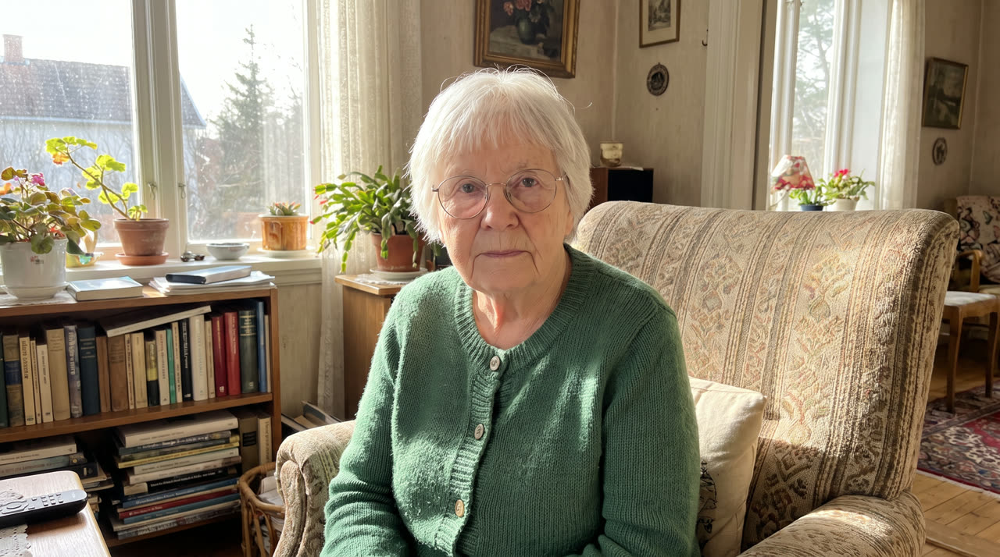

Magic Agent · checkpoint
2026-10-08 · one natural-language prompt → finished video · pipeline v2
Lighthouse short film
“A short film, 2 minutes. A lighthouse keeper finds a glowing shell on the beach at dawn. She brings it home. At night it hums and the lamp goes out. She climbs the tower in a storm and uses the shell to relight it. Ships are saved. Morning again, she puts the shell back on the beach. Melancholy, painterly, no dialogue, just score.”
| Length | 120 s · 24 clips · 16 scenes |
|---|---|
| Magic Hour credits | 17,320 |
| Wall-clock | about 18 min (two invocations: first 4 scenes (~6 min), then the rest (~12 min); scenes run in parallel) |
| Job time (sum) | 86 min across 53 Magic Hour jobs |
| Clip start matches its frame | 0.956–0.996 |
| Continuous joins | 8 · similarity 0.988–0.996 · frame jump 2.2–2.4 (normal motion ≈ 0.67) |
| Cuts | 15 |
Shot list (24)
| 01 | cut | Beach | Shallow seawater gently recedes between the rocks. Slow push in. |
| 02 | cut | Beach | Keeper walks toward Shell, slowing as she notices its glow. Static camera. |
| 03 | continuous | Beach | Keeper kneels beside Shell. Static camera. |
| 04 | cut | Beach | Keeper gently turns Shell in her palm, then holds it still. Static camera. |
| 05 | cut | Cottage Approach | Keeper carries Shell along the path to the cottage door. Static camera. |
| 06 | cut | Kitchen | Keeper places Shell on Table beside Cup. Static camera. |
| 07 | continuous | Kitchen | Window light gradually fades to evening blue while Shell maintains its amber glow. Static camera. |
| 08 | cut | Kitchen | Keeper eats slowly, briefly glancing toward Shell. Static camera. |
| 09 | cut | Kitchen | Shell remains motionless, casting a steady amber pool across Table. Static camera. |
| 10 | cut | Kitchen | Lamp goes dark, removing its beam from the rain-veiled sea. Static camera. |
| 11 | cut | Offshore Reef | Ships drift closer to Offshore Reef. Static camera. |
| 12 | cut | Tower Stairs | Keeper climbs Tower Stairs with Shell held against her chest. Static camera. |
| 13 | continuous | Tower Stairs | Keeper continues climbing, bracing on Railing as rain blows through the windows and Shell light escapes between her fingers. Static camera. |
| 14 | cut | Lantern Room | Keeper opens Lamp's hinged glass housing. Static camera. |
| 15 | continuous | Lantern Room | Keeper brings Shell close to Lamp's dark burner. Static camera. |
| 16 | continuous | Lantern Room | Amber light gathers inside Lamp's burner until it ignites, illuminating Keeper's face. Static camera. |
| 17 | cut | Lantern Room | Lamp's returning beam sweeps across Ships while Keeper watches. Static camera. |
| 18 | cut | Offshore Reef | Ships turn away from Offshore Reef in succession, moving toward open water. Static camera. |
| 19 | cut | Beach | Keeper kneels at Shell's original resting place. Static camera. |
| 20 | continuous | Beach | Keeper gently settles Shell into the wet sand, leaving her hand beside it. Static camera. |
| 21 | continuous | Beach | Shell's amber glow diminishes until it is barely visible in the dawn light. Static camera. |
| 22 | cut | Beach | Keeper withdraws her lingering hand and slowly stands. Static camera. |
| 23 | continuous | Beach | Keeper walks away from Shell toward Lighthouse. Static camera. |
| 24 | cut | Beach | A thin sheet of seawater reaches Shell and passes gently around its unmoving spiral. Static camera. |
LLM calls
- Creative director: story (gpt-6.1-sol)
- Creative director: change-based operational chunks (gpt-6.1-sol)
- Shot planner: bible + 24-shot list (gpt-6.1-sol)
Magic Hour tool calls (53)
| # | Step | Endpoint · model | Credits | s | Prompt |
|---|---|---|---|---|---|
| 1 | Reference image Beach | /v1/ai-image-generator nano-banana-pro 2k | 200 | 30 | 16:9 melancholy painterly film, naturalistic proportions, softly blended light and textured surfaces; pearl grey, slate blue, faded blue, weathered white and muted brown, with restrained amber accents.. Location plate of Beach: Rocky shoreline with grey sand, shallow rock pools, dark stones, ribbons of brown kelp and scattered broken shells.. Wide establishing view, empty, no people. |
| 2 | Reference image Keeper | /v1/ai-image-generator nano-banana-pro 2k | 200 | 30 | 16:9 melancholy painterly film, naturalistic proportions, softly blended light and textured surfaces; pearl grey, slate blue, faded blue, weathered white and muted brown, with restrained amber accents.. Character reference sheet of Keeper: Woman in her late fifties with a lined face, narrow shoulders, weathered hands and greying hair tied back; heavy charcoal coat, neatly repaired muted clothing and dark boots.. Full body, front view, standing, neutral pose, plain light grey background, even soft light. |
| 3 | Reference image Shell | /v1/ai-image-generator nano-banana-pro 2k | 200 | 30 | 16:9 melancholy painterly film, naturalistic proportions, softly blended light and textured surfaces; pearl grey, slate blue, faded blue, weathered white and muted brown, with restrained amber accents.. Object reference of Shell: Small ivory spiral seashell with fine ridges and a translucent amber interior.. Centred, large in frame, plain light grey background, even soft light. |
| 4 | Reference image Lamp | /v1/ai-image-generator nano-banana-pro 2k | 200 | 36 | 16:9 melancholy painterly film, naturalistic proportions, softly blended light and textured surfaces; pearl grey, slate blue, faded blue, weathered white and muted brown, with restrained amber accents.. Object reference of Lamp: Large brass lighthouse lamp with a dark metal burner, circular glass optics and a hinged glass housing.. Centred, large in frame, plain light grey background, even soft light. |
| 5 | Reference image Kitchen | /v1/ai-image-generator nano-banana-pro 2k | 200 | 36 | 16:9 melancholy painterly film, naturalistic proportions, softly blended light and textured surfaces; pearl grey, slate blue, faded blue, weathered white and muted brown, with restrained amber accents.. Location plate of Kitchen: Small cottage kitchen with faded blue walls, worn wooden floorboards and a sea-facing window overlooking the lighthouse tower.. Wide establishing view, empty, no people. |
| 6 | Reference image Driftwood | /v1/ai-image-generator nano-banana-pro 2k | 200 | 36 | 16:9 melancholy painterly film, naturalistic proportions, softly blended light and textured surfaces; pearl grey, slate blue, faded blue, weathered white and muted brown, with restrained amber accents.. Object reference of Driftwood: Scattered pale, salt-worn branches and irregular wooden fragments.. Centred, large in frame, plain light grey background, even soft light. |
| 7 | Reference image Ships | /v1/ai-image-generator nano-banana-pro 2k | 200 | 38 | 16:9 melancholy painterly film, naturalistic proportions, softly blended light and textured surfaces; pearl grey, slate blue, faded blue, weathered white and muted brown, with restrained amber accents.. Object reference of Ships: Three distant slate-coloured coastal vessels with low hulls, short masts and small navigation lights.. Centred, large in frame, plain light grey background, even soft light. |
| 8 | Reference image Offshore Reef | /v1/ai-image-generator nano-banana-pro 2k | 200 | 39 | 16:9 melancholy painterly film, naturalistic proportions, softly blended light and textured surfaces; pearl grey, slate blue, faded blue, weathered white and muted brown, with restrained amber accents.. Location plate of Offshore Reef: Open coastal water surrounding a jagged, nearly submerged ridge of black rock.. Wide establishing view, empty, no people. |
| 9 | Reference image Utensil | /v1/ai-image-generator nano-banana-pro 2k | 200 | 40 | 16:9 melancholy painterly film, naturalistic proportions, softly blended light and textured surfaces; pearl grey, slate blue, faded blue, weathered white and muted brown, with restrained amber accents.. Object reference of Utensil: Simple dull silver eating spoon.. Centred, large in frame, plain light grey background, even soft light. |
| 10 | Reference image Table | /v1/ai-image-generator nano-banana-pro 2k | 200 | 40 | 16:9 melancholy painterly film, naturalistic proportions, softly blended light and textured surfaces; pearl grey, slate blue, faded blue, weathered white and muted brown, with restrained amber accents.. Object reference of Table: Rectangular kitchen table made from worn brown wooden planks.. Centred, large in frame, plain light grey background, even soft light. |
| 11 | Reference image Meal | /v1/ai-image-generator nano-banana-pro 2k | 200 | 41 | 16:9 melancholy painterly film, naturalistic proportions, softly blended light and textured surfaces; pearl grey, slate blue, faded blue, weathered white and muted brown, with restrained amber accents.. Object reference of Meal: Plain grey ceramic plate holding bread and a modest serving of vegetables.. Centred, large in frame, plain light grey background, even soft light. |
| 12 | Reference image Cup | /v1/ai-image-generator nano-banana-pro 2k | 200 | 42 | 16:9 melancholy painterly film, naturalistic proportions, softly blended light and textured surfaces; pearl grey, slate blue, faded blue, weathered white and muted brown, with restrained amber accents.. Object reference of Cup: Chipped off-white ceramic cup with a small curved handle.. Centred, large in frame, plain light grey background, even soft light. |
| 13 | Reference image Lantern Room | /v1/ai-image-generator nano-banana-pro 2k | 200 | 43 | 16:9 melancholy painterly film, naturalistic proportions, softly blended light and textured surfaces; pearl grey, slate blue, faded blue, weathered white and muted brown, with restrained amber accents.. Location plate of Lantern Room: Circular lighthouse chamber with large salt-marked glass panes, slender metal framing and a central lamp pedestal.. Wide establishing view, empty, no people. |
| 14 | Cut start frame 01 | /v1/ai-image-editor nano-banana-pro 2k | 200 | 43 | 16:9 melancholy painterly film, naturalistic proportions, softly blended light and textured surfaces; pearl grey, slate blue, faded blue, weathered white and muted brown, with restrained amber accents.. 16:9 film frame. Wide view of Beach, with reflective pools and kelp in the foreground and Lighthouse above the shore. Pearl-grey dawn light fills a calm, rain-free sky. No person or individual Shell is distinguishable. Reference images: image 1 = Beach (location). Keep each character's identity, face, hair and clothing and each prop's shape and colour exactly as in its reference; take the location's architecture and landscape from its plate. Do not copy the reference poses, framing or grey backgrounds. |
| 15 | Cut start frame 02 | /v1/ai-image-editor nano-banana-pro 2k | 200 | 45 | 16:9 melancholy painterly film, naturalistic proportions, softly blended light and textured surfaces; pearl grey, slate blue, faded blue, weathered white and muted brown, with restrained amber accents.. 16:9 film frame. Medium-wide view along Beach at dawn. Keeper stands left of centre near the waterline; Shell forms a small amber point among broken shells ahead of her. Diffuse pearl-grey light, calm water and no rain. Reference images: image 1 = Keeper (character); image 2 = Shell (prop); image 3 = Beach (location). Keep each character's identity, face, hair and clothing and each prop's shape and colour exactly as in its reference; take the location's architecture and landscape from its plate. Do not copy the reference poses, framing or grey backgrounds. |
| 16 | Cut start frame 04 | /v1/ai-image-editor nano-banana-pro 2k | 200 | 51 | 16:9 melancholy painterly film, naturalistic proportions, softly blended light and textured surfaces; pearl grey, slate blue, faded blue, weathered white and muted brown, with restrained amber accents.. 16:9 film frame. Close view of Keeper's open palm above Beach sand, with Shell resting in it. Her other hand hovers beside the spiral. Soft amber light warms her fingers beneath the cool, rain-free dawn light. Reference images: image 1 = Keeper (character); image 2 = Shell (prop); image 3 = Beach (location). Keep each character's identity, face, hair and clothing and each prop's shape and colour exactly as in its reference; take the location's architecture and landscape from its plate. Do not copy the reference poses, framing or grey backgrounds. |
| 17 | Cut start frame 05 | /v1/ai-image-editor nano-banana-pro 2k | 200 | 45 | 16:9 melancholy painterly film, naturalistic proportions, softly blended light and textured surfaces; pearl grey, slate blue, faded blue, weathered white and muted brown, with restrained amber accents.. 16:9 film frame. Medium-wide view of Cottage Approach in subdued morning light. Keeper stands on the stone path facing the closed cottage door, holding Shell in one hand. The weather is dry. Reference images: image 1 = Keeper (character); image 2 = Shell (prop). Keep each character's identity, face, hair and clothing and each prop's shape and colour exactly as in its reference; take the location's architecture and landscape from its plate. Do not copy the reference poses, framing or grey backgrounds. |
| 18 | Cut start frame 06 | /v1/ai-image-editor nano-banana-pro 2k | 200 | 99 | 16:9 melancholy painterly film, naturalistic proportions, softly blended light and textured surfaces; pearl grey, slate blue, faded blue, weathered white and muted brown, with restrained amber accents.. 16:9 film frame. Medium view of Kitchen in subdued morning window light. Keeper stands beside Table, holding Shell just above an empty space beside Cup. Meal and Utensil sit farther along the tabletop. No rain marks the window. Reference images: image 1 = Keeper (character); image 2 = Shell (prop); image 3 = Table (prop); image 4 = Cup (prop); image 5 = Meal (prop); image 6 = Utensil (prop); image 7 = Kitchen (location). Keep each character's identity, face, hair and clothing and each prop's shape and colour exactly as in its reference; take the location's architecture and landscape from its plate. Do not copy the reference poses, framing or grey backgrounds. |
| 19 | Cut start frame 08 | /v1/ai-image-editor nano-banana-pro 2k | 200 | 103 | 16:9 melancholy painterly film, naturalistic proportions, softly blended light and textured surfaces; pearl grey, slate blue, faded blue, weathered white and muted brown, with restrained amber accents.. 16:9 film frame. Medium view across Table at dusk. Keeper sits alone behind Meal, holding Utensil. Shell glows beside Cup within her eyeline. Fading blue-grey window light washes the dry Kitchen. Reference images: image 1 = Keeper (character); image 2 = Shell (prop); image 3 = Table (prop); image 4 = Cup (prop); image 5 = Meal (prop); image 6 = Utensil (prop); image 7 = Kitchen (location). Keep each character's identity, face, hair and clothing and each prop's shape and colour exactly as in its reference; take the location's architecture and landscape from its plate. Do not copy the reference poses, framing or grey backgrounds. |
| 20 | Cut start frame 09 | /v1/ai-image-editor nano-banana-pro 2k | 200 | 74 | 16:9 melancholy painterly film, naturalistic proportions, softly blended light and textured surfaces; pearl grey, slate blue, faded blue, weathered white and muted brown, with restrained amber accents.. 16:9 film frame. Close tabletop view in Kitchen at night. Shell rests beside Cup on Table, its amber radiance illuminating nearby wood. The surrounding room is dark. Reference images: image 1 = Shell (prop); image 2 = Table (prop); image 3 = Cup (prop); image 4 = Kitchen (location). Keep each character's identity, face, hair and clothing and each prop's shape and colour exactly as in its reference; take the location's architecture and landscape from its plate. Do not copy the reference poses, framing or grey backgrounds. |
| 21 | Cut start frame 10 | /v1/ai-image-editor nano-banana-pro 2k | 200 | 48 | 16:9 melancholy painterly film, naturalistic proportions, softly blended light and textured surfaces; pearl grey, slate blue, faded blue, weathered white and muted brown, with restrained amber accents.. 16:9 film frame. View through the Kitchen window toward Lighthouse and the sea at night. Heavy rain streaks the glass and veils rough water. Lamp is visible as a bright point inside the lantern crown, with its beam crossing the rain. Reference images: image 1 = Lamp (prop); image 2 = Kitchen (location). Keep each character's identity, face, hair and clothing and each prop's shape and colour exactly as in its reference; take the location's architecture and landscape from its plate. Do not copy the reference poses, framing or grey backgrounds. |
| 22 | Cut start frame 11 | /v1/ai-image-editor nano-banana-pro 2k | 200 | 55 | 16:9 melancholy painterly film, naturalistic proportions, softly blended light and textured surfaces; pearl grey, slate blue, faded blue, weathered white and muted brown, with restrained amber accents.. 16:9 film frame. Wide offshore view at storm-dark night. Ships lie beyond the black rocks of Offshore Reef, their navigation lights visible through heavy rain. No lighthouse beam crosses the water. Reference images: image 1 = Ships (prop); image 2 = Offshore Reef (location). Keep each character's identity, face, hair and clothing and each prop's shape and colour exactly as in its reference; take the location's architecture and landscape from its plate. Do not copy the reference poses, framing or grey backgrounds. |
| 23 | Cut start frame 12 | /v1/ai-image-editor nano-banana-pro 2k | 200 | 67 | 16:9 melancholy painterly film, naturalistic proportions, softly blended light and textured surfaces; pearl grey, slate blue, faded blue, weathered white and muted brown, with restrained amber accents.. 16:9 film frame. Medium-wide view up Tower Stairs at night. Keeper stands on the lower steps, holding Shell against her chest beside Railing. Amber spill lights her hands; narrow windows show rain and darkness. Reference images: image 1 = Keeper (character); image 2 = Shell (prop). Keep each character's identity, face, hair and clothing and each prop's shape and colour exactly as in its reference; take the location's architecture and landscape from its plate. Do not copy the reference poses, framing or grey backgrounds. |
| 24 | Cut start frame 14 | /v1/ai-image-editor nano-banana-pro 2k | 200 | 57 | 16:9 melancholy painterly film, naturalistic proportions, softly blended light and textured surfaces; pearl grey, slate blue, faded blue, weathered white and muted brown, with restrained amber accents.. 16:9 film frame. Medium-close view in Lantern Room at storm-dark night. Keeper stands beside extinguished Lamp, holding Shell against her chest. Her free hand rests on the closed glass housing. Rain streaks the panes behind her. Reference images: image 1 = Keeper (character); image 2 = Shell (prop); image 3 = Lamp (prop); image 4 = Lantern Room (location). Keep each character's identity, face, hair and clothing and each prop's shape and colour exactly as in its reference; take the location's architecture and landscape from its plate. Do not copy the reference poses, framing or grey backgrounds. |
| 25 | Cut start frame 17 | /v1/ai-image-editor nano-banana-pro 2k | 200 | 71 | 16:9 melancholy painterly film, naturalistic proportions, softly blended light and textured surfaces; pearl grey, slate blue, faded blue, weathered white and muted brown, with restrained amber accents.. 16:9 film frame. Over-shoulder view past Keeper through Lantern Room glass toward Offshore Reef at night. Burning Lamp occupies the frame edge; Shell remains in Keeper's lowered hand. Ships' lights appear beyond rain-streaked panes. Reference images: image 1 = Keeper (character); image 2 = Shell (prop); image 3 = Lamp (prop); image 4 = Ships (prop); image 5 = Lantern Room (location). Keep each character's identity, face, hair and clothing and each prop's shape and colour exactly as in its reference; take the location's architecture and landscape from its plate. Do not copy the reference poses, framing or grey backgrounds. |
| 26 | Cut start frame 18 | /v1/ai-image-editor nano-banana-pro 2k | 200 | 52 | 16:9 melancholy painterly film, naturalistic proportions, softly blended light and textured surfaces; pearl grey, slate blue, faded blue, weathered white and muted brown, with restrained amber accents.. 16:9 film frame. Wide view of Offshore Reef during the rainy night. Ships sit dangerously near the jagged rocks, their navigation lights distinct. A lighthouse beam illuminates a pale band across the rough water. Reference images: image 1 = Ships (prop); image 2 = Offshore Reef (location). Keep each character's identity, face, hair and clothing and each prop's shape and colour exactly as in its reference; take the location's architecture and landscape from its plate. Do not copy the reference poses, framing or grey backgrounds. |
| 27 | Cut start frame 19 | /v1/ai-image-editor nano-banana-pro 2k | 200 | 97 | 16:9 melancholy painterly film, naturalistic proportions, softly blended light and textured surfaces; pearl grey, slate blue, faded blue, weathered white and muted brown, with restrained amber accents.. 16:9 film frame. Medium-wide view of the original finding spot on Beach at the following dawn. Keeper stands with Shell in her hand. Driftwood and storm-cast weed scatter the wet sand. Pearl-grey light returns beneath a rain-free sky. Reference images: image 1 = Keeper (character); image 2 = Shell (prop); image 3 = Driftwood (prop); image 4 = Beach (location). Keep each character's identity, face, hair and clothing and each prop's shape and colour exactly as in its reference; take the location's architecture and landscape from its plate. Do not copy the reference poses, framing or grey backgrounds. |
| 28 | Cut start frame 22 | /v1/ai-image-editor nano-banana-pro 2k | 200 | 69 | 16:9 melancholy painterly film, naturalistic proportions, softly blended light and textured surfaces; pearl grey, slate blue, faded blue, weathered white and muted brown, with restrained amber accents.. 16:9 film frame. Wide, low view of Beach in pale morning light. Keeper kneels beside faintly glowing Shell in the foreground, her hand resting near it. Lighthouse rises in the distance; Driftwood lies along the rain-free shoreline. Reference images: image 1 = Keeper (character); image 2 = Shell (prop); image 3 = Driftwood (prop); image 4 = Beach (location). Keep each character's identity, face, hair and clothing and each prop's shape and colour exactly as in its reference; take the location's architecture and landscape from its plate. Do not copy the reference poses, framing or grey backgrounds. |
| 29 | Cut start frame 24 | /v1/ai-image-editor nano-banana-pro 2k | 200 | 67 | 16:9 melancholy painterly film, naturalistic proportions, softly blended light and textured surfaces; pearl grey, slate blue, faded blue, weathered white and muted brown, with restrained amber accents.. 16:9 film frame. Locked low close-up of Shell resting in wet Beach sand under pale morning light. Its amber glow is barely perceptible. The edge of a thin returning sheet of seawater lies immediately beside its spiral. Reference images: image 1 = Shell (prop); image 2 = Beach (location). Keep each character's identity, face, hair and clothing and each prop's shape and colour exactly as in its reference; take the location's architecture and landscape from its plate. Do not copy the reference poses, framing or grey backgrounds. |
| 30 | Video clip 01 | /v1/image-to-video wan-3.0 720p · 5s | 480 | 112 | Shallow seawater gently recedes between the rocks. Slow push in. |
| 31 | Video clip 02 | /v1/image-to-video wan-3.0 720p · 5s | 480 | 113 | Keeper walks toward Shell, slowing as she notices its glow. Static camera. |
| 32 | Video clip 03 | /v1/image-to-video wan-3.0 720p · 5s | 480 | 157 | Keeper kneels beside Shell. Static camera. |
| 33 | Video clip 04 | /v1/image-to-video wan-3.0 720p · 5s | 480 | 113 | Keeper gently turns Shell in her palm, then holds it still. Static camera. |
| 34 | Video clip 05 | /v1/image-to-video wan-3.0 720p · 5s | 480 | 113 | Keeper carries Shell along the path to the cottage door. Static camera. |
| 35 | Video clip 06 | /v1/image-to-video wan-3.0 720p · 5s | 480 | 219 | Keeper places Shell on Table beside Cup. Static camera. |
| 36 | Video clip 07 | /v1/image-to-video wan-3.0 720p · 5s | 480 | 145 | Window light gradually fades to evening blue while Shell maintains its amber glow. Static camera. |
| 37 | Video clip 08 | /v1/image-to-video wan-3.0 720p · 5s | 480 | 212 | Keeper eats slowly, briefly glancing toward Shell. Static camera. |
| 38 | Video clip 09 | /v1/image-to-video wan-3.0 720p · 5s | 480 | 231 | Shell remains motionless, casting a steady amber pool across Table. Static camera. |
| 39 | Video clip 10 | /v1/image-to-video wan-3.0 720p · 5s | 480 | 137 | Lamp goes dark, removing its beam from the rain-veiled sea. Static camera. |
| 40 | Video clip 11 | /v1/image-to-video wan-3.0 720p · 5s | 480 | 137 | Ships drift closer to Offshore Reef. Static camera. |
| 41 | Video clip 12 | /v1/image-to-video wan-3.0 720p · 5s | 480 | 145 | Keeper climbs Tower Stairs with Shell held against her chest. Static camera. |
| 42 | Video clip 13 | /v1/image-to-video wan-3.0 720p · 5s | 480 | 128 | Keeper continues climbing, bracing on Railing as rain blows through the windows and Shell light escapes between her fingers. Static camera. |
| 43 | Video clip 14 | /v1/image-to-video wan-3.0 720p · 5s | 480 | 143 | Keeper opens Lamp's hinged glass housing. Static camera. |
| 44 | Video clip 15 | /v1/image-to-video wan-3.0 720p · 5s | 480 | 136 | Keeper brings Shell close to Lamp's dark burner. Static camera. |
| 45 | Video clip 16 | /v1/image-to-video wan-3.0 720p · 5s | 480 | 130 | Amber light gathers inside Lamp's burner until it ignites, illuminating Keeper's face. Static camera. |
| 46 | Video clip 17 | /v1/image-to-video wan-3.0 720p · 5s | 480 | 143 | Lamp's returning beam sweeps across Ships while Keeper watches. Static camera. |
| 47 | Video clip 18 | /v1/image-to-video wan-3.0 720p · 5s | 480 | 143 | Ships turn away from Offshore Reef in succession, moving toward open water. Static camera. |
| 48 | Video clip 19 | /v1/image-to-video wan-3.0 720p · 5s | 480 | 269 | Keeper kneels at Shell's original resting place. Static camera. |
| 49 | Video clip 20 | /v1/image-to-video wan-3.0 720p · 5s | 480 | 113 | Keeper gently settles Shell into the wet sand, leaving her hand beside it. Static camera. |
| 50 | Video clip 21 | /v1/image-to-video wan-3.0 720p · 5s | 480 | 138 | Shell's amber glow diminishes until it is barely visible in the dawn light. Static camera. |
| 51 | Video clip 22 | /v1/image-to-video wan-3.0 720p · 5s | 480 | 127 | Keeper withdraws her lingering hand and slowly stands. Static camera. |
| 52 | Video clip 23 | /v1/image-to-video wan-3.0 720p · 5s | 480 | 175 | Keeper walks away from Shell toward Lighthouse. Static camera. |
| 53 | Video clip 24 | /v1/image-to-video wan-3.0 720p · 5s | 480 | 144 | A thin sheet of seawater reaches Shell and passes gently around its unmoving spiral. Static camera. |
Creative director output: story
At dawn, the beach lies beneath a wash of pearl-grey light. Pools between the rocks hold the pale sky; ribbons of kelp mark the retreating tide. Above the shore stands a weathered lighthouse, its white walls stained by salt. The keeper walks alone along the waterline, her coat hanging heavily from narrow shoulders. Among the broken shells, something glows. She kneels. A small spiral shell rests in the sand, lit from within by a soft amber radiance. She turns it in her palm, and its light warms her weathered fingers. For a moment she remains there, reluctant to disturb it. Then she carries it home. In the cottage beneath the tower, she places the shell beside a chipped cup on the kitchen table. Its glow persists through the fading day, a small warmth among worn wood, faded blue walls and neatly mended clothes. She eats alone, occasionally looking toward it. At night, the shell begins to hum—a low, trembling thread within the musical score. Beyond the window, a storm gathers. Rain obscures the sea, and the lighthouse lamp goes out. Far offshore, several ships drift toward the dark reef. The keeper takes the shell and climbs the tower. Wind presses rain through the narrow windows. She grips the iron railing, ascending the worn steps with the shell held against her chest. Its light spills between her fingers. At the top, she stands beside the extinguished lamp. She opens its glass housing and brings the shell close to the dark burner. Amber light gathers there, faint at first, then bright enough to illuminate her face. The lamp catches. Its beam returns across the storm-dark water. The keeper watches it pass over the ships. One changes course, then another; their lights move steadily away from the reef toward open sea. She stays beside the lamp until they are safe. Morning comes softly. The storm has left scattered weed and driftwood along the beach. The keeper returns to the place where she found the shell. She kneels and settles it into the wet sand. Its glow is faint now, almost lost in the dawn. Her hand lingers beside it before she stands. She walks back toward the lighthouse as a thin sheet of water reaches the shell. The score fades, and the returning tide leaves its spiral resting in the pale morning light.
Animate grandma
“animate this photo of my grandma so she smiles and waves, like 5 seconds”

Upload u1 is a stand-in, generated from the test case's description of the photo (no real photo in the test set yet). The clip starts on this exact image.
| Length | 5 s · 1 clip · 1 scene |
|---|---|
| Magic Hour credits | 680 (incl. 200 for the stand-in upload) |
| Wall-clock | about 4 min (includes the stand-in upload) |
| Job time (sum) | 2 min across 2 Magic Hour jobs |
| Clip start matches its frame | 0.97 |
Shot list (1)
| shot_1 | cut · upload | Living Room | Grandma gives a gentle greeting: her smile develops, one hand lifts into a small wave, then returns to rest while her smile remains. Static camera, preserving the uploaded photo’s framing. |
LLM calls
- Creative director: story
- Creative director: operational chunks
- Shot planner (gpt-6.1-sol)
- Fixtures check (gpt-6.1-sol)
Magic Hour tool calls (2)
| # | Step | Endpoint · model | Credits | s | Prompt |
|---|---|---|---|---|---|
| 0 | Stand-in upload | /v1/ai-image-generator nano-banana-pro 2k | 200 | An ordinary real photograph, as a user would upload it: One photo: an elderly woman with short white hair, round glasses and a green cardigan, sitting in an armchair in a sunlit living room, looking at the camera with a neutral expression. | |
| 1 | Video clip shot_1 | /v1/image-to-video wan-3.0 720p · 5s | 480 | 108 | Grandma gives a gentle greeting: her smile develops, one hand lifts into a small wave, then returns to rest while her smile remains. Static camera, preserving the uploaded photo’s framing. |
Bakery ad
“ad for my bakery, 20 sec, the end card must say exactly 'Sweet Crumbs — Open 7am–3pm, 12 Elm St' dont spell anything wrong”
| Length | 20 s · 4 clips · 4 scenes |
|---|---|
| Magic Hour credits | 4,320 |
| Wall-clock | about 5 min (generation only; the first text overlay did not stop (bug, fixed) and was re-run from cache) |
| Job time (sum) | 15 min across 15 Magic Hour jobs |
| Clip start matches its frame | 0.988–0.994 |
| Cuts | 3 |
| Text layers | “Sweet Crumbs — Open 7am–3pm, 12 Elm St” 15–20 s (rendered, exact) |
Shot list (4)
| shot_01 | cut | Sweet Crumbs | Baker slowly lifts Tray of Croissants out of Oven to waist height beside the displayed Cinnamon rolls and Cookies. Slow push in. |
| shot_02 | cut | Sweet Crumbs | Baker warmly hands Pastry box across Display counter into Customer's waiting hands. Static camera. |
| shot_03 | cut | Sweet Crumbs | Customer takes a bite from one Croissants half, then smiles with delight while holding both halves. Static camera. |
| shot_04 | cut | Cream backdrop | Cream backdrop remains still and unobstructed. Static camera. |
LLM calls
- Creative director: story
- Creative director: operational chunks
- Shot planner (gpt-6.1-sol)
- Fixtures check (gpt-6.1-sol)
- Vision check on each cut frame (gpt-6.1-sol)
Magic Hour tool calls (15)
| # | Step | Endpoint · model | Credits | s | Prompt |
|---|---|---|---|---|---|
| 1 | Reference image Customer | /v1/ai-image-generator nano-banana-pro 2k | 200 | 28 | Polished photorealistic live-action bakery advertisement, 16:9; warm cream, golden pastry and natural wood palette; soft natural light, tactile food detail and restrained film texture.. Character reference sheet of Customer: Adult in their thirties with a round face, shoulder-length dark hair and a mustard jacket over a teal shirt.. Full body, front view, standing, neutral pose, plain light grey background, even soft light. |
| 2 | Reference image Oven mitts | /v1/ai-image-generator nano-banana-pro 2k | 200 | 29 | Polished photorealistic live-action bakery advertisement, 16:9; warm cream, golden pastry and natural wood palette; soft natural light, tactile food detail and restrained film texture.. Object reference of Oven mitts: Pair of cream quilted cotton oven mitts.. Centred, large in frame, plain light grey background, even soft light. |
| 3 | Reference image Tray | /v1/ai-image-generator nano-banana-pro 2k | 200 | 30 | Polished photorealistic live-action bakery advertisement, 16:9; warm cream, golden pastry and natural wood palette; soft natural light, tactile food detail and restrained film texture.. Object reference of Tray: Rectangular brushed-aluminum baking tray with shallow raised edges.. Centred, large in frame, plain light grey background, even soft light. |
| 4 | Reference image Croissants | /v1/ai-image-generator nano-banana-pro 2k | 200 | 33 | Polished photorealistic live-action bakery advertisement, 16:9; warm cream, golden pastry and natural wood palette; soft natural light, tactile food detail and restrained film texture.. Object reference of Croissants: Golden crescent-shaped pastries with glossy laminated crusts and pale, airy interiors.. Centred, large in frame, plain light grey background, even soft light. |
| 5 | Reference image Baker | /v1/ai-image-generator nano-banana-pro 2k | 200 | 40 | Polished photorealistic live-action bakery advertisement, 16:9; warm cream, golden pastry and natural wood palette; soft natural light, tactile food detail and restrained film texture.. Character reference sheet of Baker: Adult in their thirties with an oval face, short dark hair, a navy shirt and a cream flour-dusted apron.. Full body, front view, standing, neutral pose, plain light grey background, even soft light. |
| 6 | Reference image Sweet Crumbs | /v1/ai-image-generator nano-banana-pro 2k | 200 | 42 | Polished photorealistic live-action bakery advertisement, 16:9; warm cream, golden pastry and natural wood palette; soft natural light, tactile food detail and restrained film texture.. Location plate of Sweet Crumbs: Cozy compact bakery with cream plaster walls, oak flooring, broad front windows and a preparation area behind the service counter.. It contains Cinnamon rolls: Plump golden spiral pastries with dark cinnamon ribbons. It contains Cookies: Thick golden-brown cookies studded with dark chocolate chips. It contains Oven: Stainless-steel commercial oven with a black interior and a hinged rectangular door. It contains Display counter: Natural oak bakery counter with a clear glass display case and a flat service ledge. It contains Shelves: Simple open shelves made of honey-colored wood. It contains Entrance door: Clear glass entrance door in a dark wooden frame with a brass handle. It contains Doorbell: Small brass bell mounted above the entrance door. Wide establishing view, empty, no people. |
| 7 | Reference image Pastry box | /v1/ai-image-generator nano-banana-pro 2k | 200 | 42 | Polished photorealistic live-action bakery advertisement, 16:9; warm cream, golden pastry and natural wood palette; soft natural light, tactile food detail and restrained film texture.. Object reference of Pastry box: Small unprinted kraft-paper pastry box with a hinged lid.. Centred, large in frame, plain light grey background, even soft light. |
| 8 | Cut start frame shot_01 | /v1/ai-image-editor nano-banana-pro 2k | 200 | 61 | Polished photorealistic live-action bakery advertisement, 16:9; warm cream, golden pastry and natural wood palette; soft natural light, tactile food detail and restrained film texture.. 16:9 film frame. Wide interior view of Sweet Crumbs on a clear morning, warmed by sunlight through the front windows and soft interior fill. Baker stands behind Display counter beside the open Oven, gripping Tray inside it with Oven mitts. Croissants fill Tray; Cinnamon rolls and Cookies sit prominently together behind the glass. Pastry box rests on the service ledge. Shelves line the rear wall. At the side of the frame, Customer is visible outside the closed Entrance door beneath Doorbell. Reference images: image 1 = Baker (character); image 2 = Customer (character); image 3 = Croissants (prop); image 4 = Tray (prop); image 5 = Oven mitts (prop); image 6 = Pastry box (prop); image 7 = Sweet Crumbs (location). Keep each character's identity, face, hair and clothing and each prop's shape and colour exactly as in its reference; take the location's architecture and landscape from its plate. Do not copy the reference poses, framing or grey backgrounds. |
| 9 | Cut start frame shot_02 | /v1/ai-image-editor nano-banana-pro 2k | 200 | 61 | Polished photorealistic live-action bakery advertisement, 16:9; warm cream, golden pastry and natural wood palette; soft natural light, tactile food detail and restrained film texture.. 16:9 film frame. Medium-wide view of the entrance and adjacent Display counter in Sweet Crumbs, in warm morning sunlight. Customer stands just inside the partly open Entrance door, facing Baker across the nearby service ledge. Doorbell is visible above the door. Baker smiles with bare hands poised around the closed Pastry box on the ledge. Tray of Croissants and Oven mitts rest farther along the counter beside Cinnamon rolls and Cookies. Shelves appear behind Baker. Reference images: image 1 = Baker (character); image 2 = Customer (character); image 3 = Pastry box (prop); image 4 = Croissants (prop); image 5 = Tray (prop); image 6 = Oven mitts (prop); image 7 = Sweet Crumbs (location). Keep each character's identity, face, hair and clothing and each prop's shape and colour exactly as in its reference; take the location's architecture and landscape from its plate. Do not copy the reference poses, framing or grey backgrounds. |
| 10 | Cut start frame shot_03 | /v1/ai-image-editor nano-banana-pro 2k | 400 | 104 | Polished photorealistic live-action bakery advertisement, 16:9; warm cream, golden pastry and natural wood palette; soft natural light, tactile food detail and restrained film texture.. 16:9 film frame. Medium close-up of Customer's face and hands at Display counter in Sweet Crumbs. Warm morning window light reveals the tender center of two freshly separated Croissants halves held in Customer's hands. One half is just below their mouth. The open, empty Pastry box rests on the counter at the bottom of the frame. The cream bakery wall forms a softly blurred background.
Reference images: image 1 = Customer (character); image 2 = Croissants (prop); image 3 = Pastry box (prop); image 4 = Sweet Crumbs (location). Keep each character's identity, face, hair and clothing and each prop's shape and colour exactly as in its reference; take the location's architecture and landscape from its plate. Do not copy the reference poses, framing or grey backgrounds. Retried: The glass display counter, cinnamon rolls, cookies, oven, entrance door, and doorbell are missing. |
| 11 | Cut start frame shot_04 | /v1/ai-image-generator nano-banana-pro 2k | 200 | 33 | Polished photorealistic live-action bakery advertisement, 16:9; warm cream, golden pastry and natural wood palette; soft natural light, tactile food detail and restrained film texture.. 16:9 film frame. Full-frame Cream backdrop, evenly lit and completely empty, with generous clear space at the center for the separately composited end-card text. |
| 12 | Video clip shot_01 | /v1/image-to-video wan-3.0 720p · 5s | 480 | 107 | Baker slowly lifts Tray of Croissants out of Oven to waist height beside the displayed Cinnamon rolls and Cookies. Slow push in. |
| 13 | Video clip shot_02 | /v1/image-to-video wan-3.0 720p · 5s | 480 | 107 | Baker warmly hands Pastry box across Display counter into Customer's waiting hands. Static camera. |
| 14 | Video clip shot_03 | /v1/image-to-video wan-3.0 720p · 5s | 480 | 101 | Customer takes a bite from one Croissants half, then smiles with delight while holding both halves. Static camera. |
| 15 | Video clip shot_04 | /v1/image-to-video wan-3.0 720p · 5s | 480 | 101 | Cream backdrop remains still and unobstructed. Static camera. |
Pipeline
- Creative director (LLM): the prompt becomes a story, then change-based operational chunks (baseline + property: from → to per chunk).
- Shot planner (1 LLM call): a bible (each character, prop and location with a fixed look; one style line) and a shot list. A shot is one action, 5 or 10 s, a fixed camera or one simple move, linked to the previous shot as cut or continuous. Uploads and on-screen text are marked here.
- References: one clean image per bible entry that appears in 2 or more scenes (nano-banana-pro 2k). An uploaded image is used as is.
- Cut start frames: image editor with the references (or the upload itself when the request is “animate this photo”). A vision check counts the entities; a frame with a missing or doubled character is made again once.
- Clips: wan-3.0, 720p, start frame only, no end frame. A continuous shot starts from the real last frame of the previous clip; a vision check confirms its characters are in that frame.
- Stitch: native 30 fps, 1280×720, hard joins. Exact text is rendered separately (headless browser) and overlaid, so it is never misspelled.
Jobs are cached by a hash of their prompt and input files, so a change re-runs only what depends on it. --estimate prices a run before it spends anything.
Known issues
- Cut frames are drawn from isolated references and text, not from earlier frames, so scale and context are re-invented at every cut (the shell is often too large; the lighthouse lamp reads as a hand lantern).
- When a character leaves the frame in a continuous chain, the video model can invent a new person when the next action needs them (a check and frame repair now guard this).
- No audio yet (score, sound, voice).
- The grandma photo is a stand-in; real uploads are not tested yet.
- Next: build each cut by transforming the earlier frame that already holds the most of its elements, and merge missing ones from the frames where they last appeared (in test).